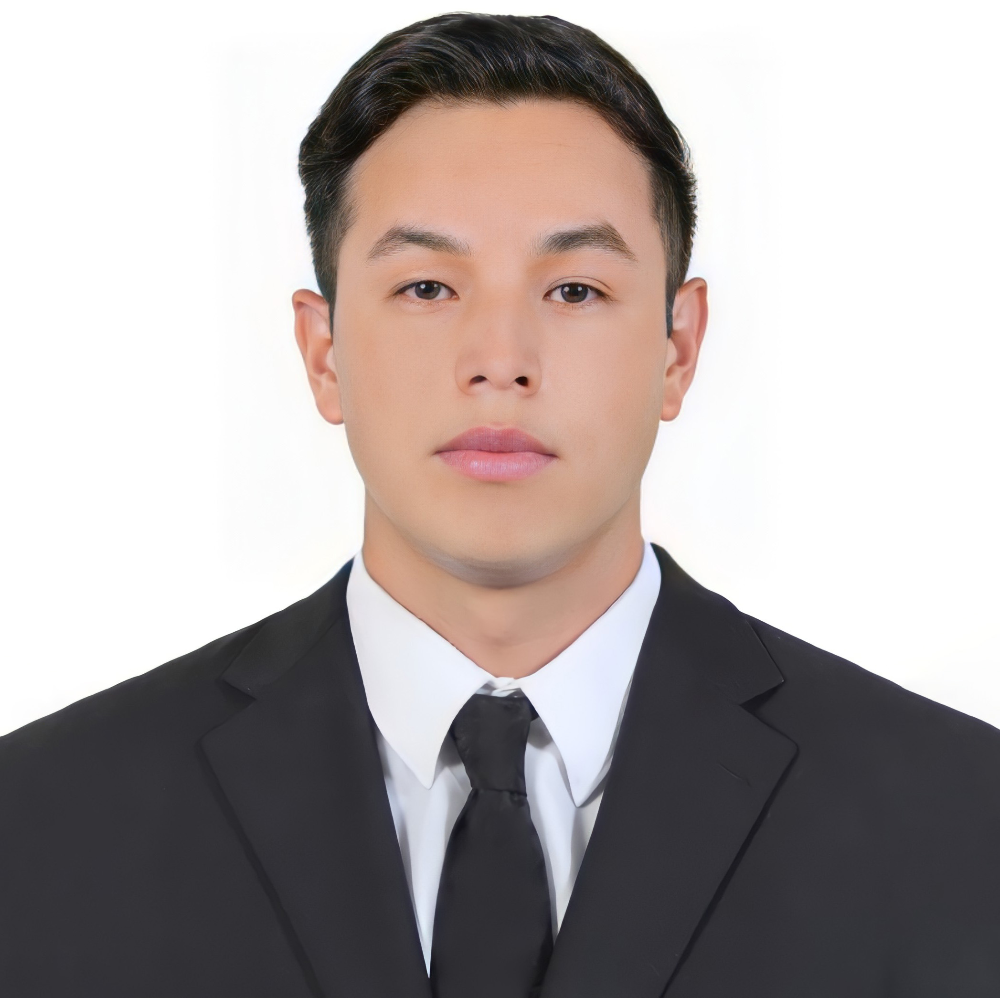

Homero Hurtado Gallegos
Ingeniero en Comunicaciones e Instrumentación Electrónica
Resumen
Ingeniero electrónico con interés en diseño de sistemas embebidos,
me agrada mantenerme en constante aprendizaje tomando cursos regularmente,
me agrada el trabajo en equipo, la aportación de ideas y opiniones para un mejor desempeño.
Mi objetivo es mantener un equilibrio entre desarrollo personal y laboral.
Formación Académica
- Ingeniería Electrónica: Instrumentación y Comunicaciones Electrónicas.
Instituto Tecnológico de Querétaro. Santiago de Querétaro, Querétaro | 05/2015 - 12/2020
- Técnico: Tecnologías de la información y comunicación.
CECyTEQ 85, Peñamiller, Querétaro | 05/2012 - 06/2015
Experiencia Laboral
- Ingeniero de calibración y pruebas de equipo médico radiológico
Compañía Mexicana de Radiología, CGR, S.A. de C.V. El Marques, Querétaro | 12/2020 – Actual
- Practicante de diseño electrónico.
emz hanauer de México. El Marques, Querétaro |09/2020 - 12/2020
Habilidades
- Simulación de circuitos electrónicos en Proteus 8, NI Multisim, LT SPice
- Programación C
- Programación a bloques en NI LabVIEW 2017
- Programación y simulación de funciones de transferencia en Matlab 17.
- Sistemas de Control en tiempo, frecuencia, digitales.
- Diseño de PCB en Proteus 8, Altium Designer 18, PCB Wizard, KiCAD.
- Sistemas Eléctricos de baja tensión.
- Control de motores de CD y CA.
- Protocolos de comunicación CAN, I2C, RS232, TCP/IP, Modelo OSI, UDP, Routing.
- Trabajo en equipo, adaptación, iniciativa, liderazgo, perseverancia, proactividad.
Idiomas
- Inglés: B2 Intermedio Avanzado (TOEFL 94 Puntos)
Pasatimepos
- Voleibol
- Ver peliculas
- Cocinar
- Viajar